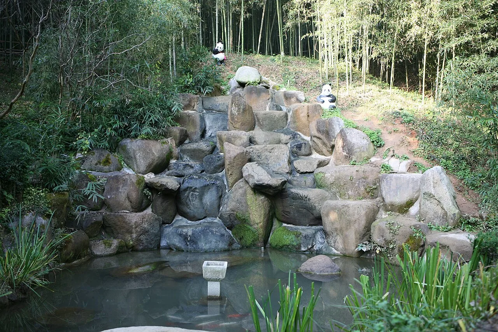
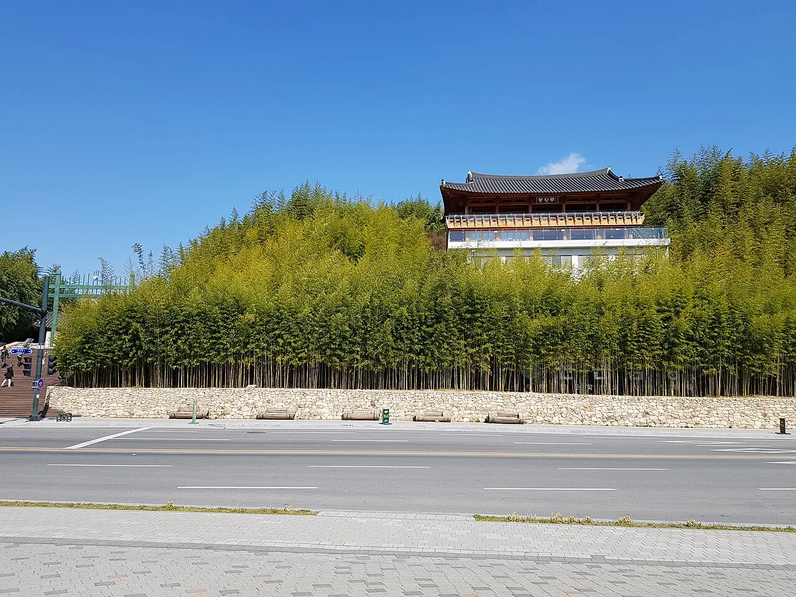
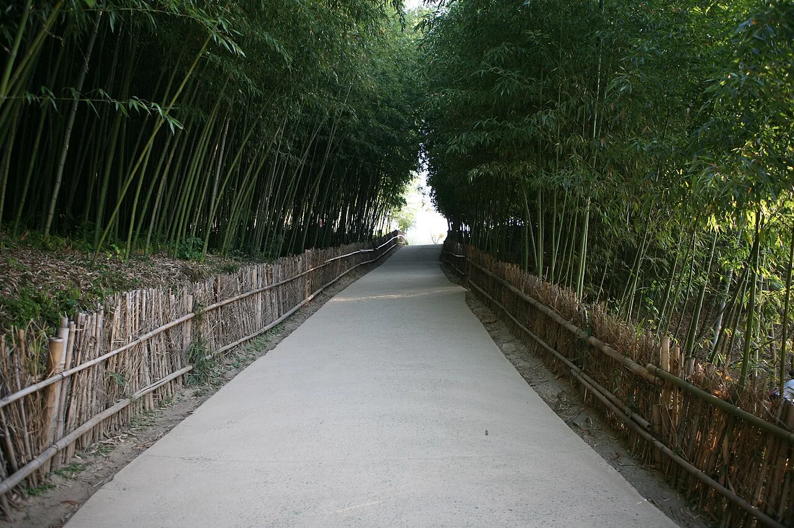
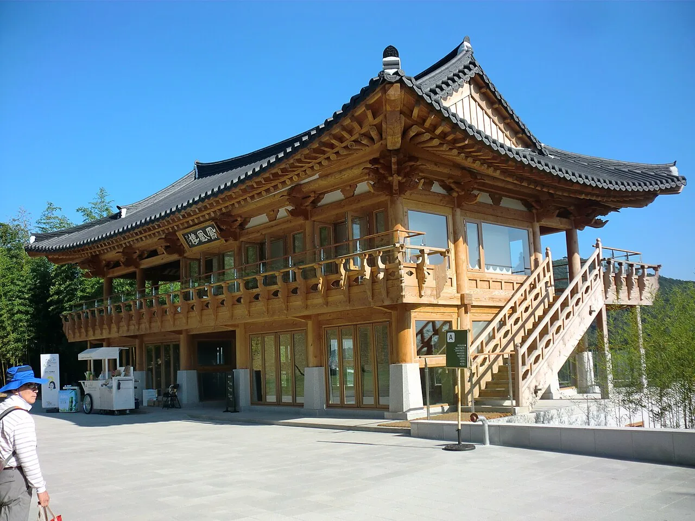
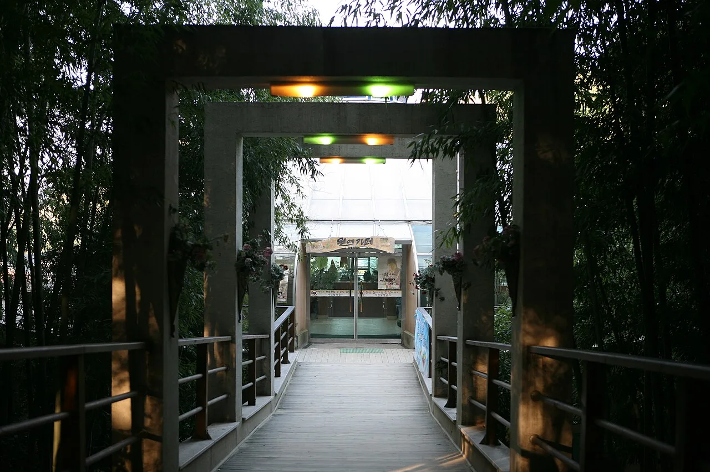
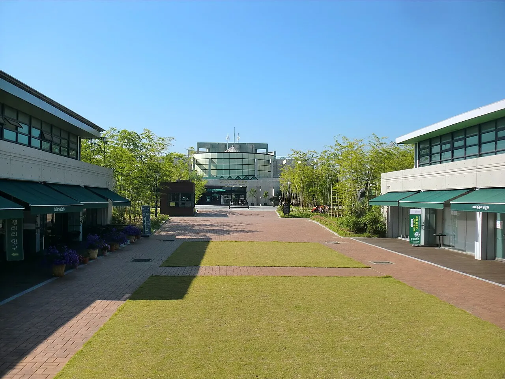
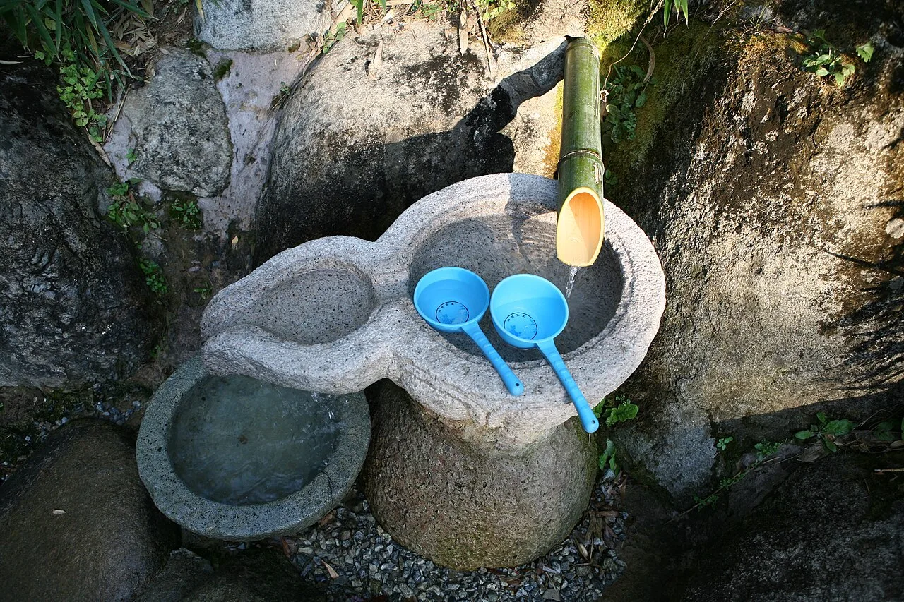
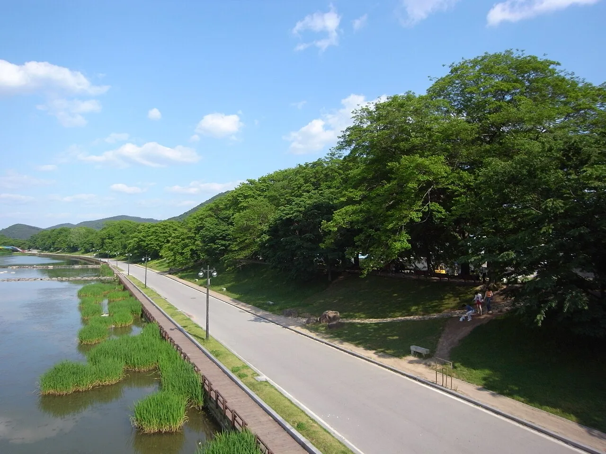
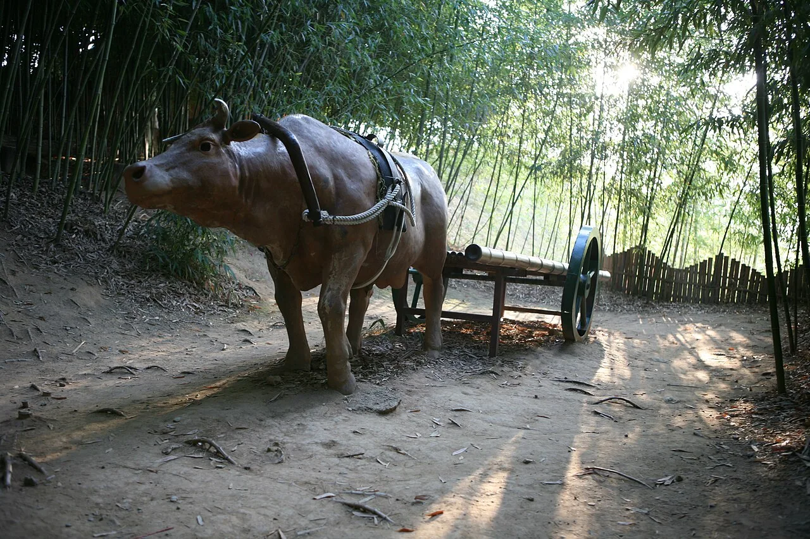

▲ 죽녹원 산책로 중간에 자리한 생태연못과 인공폭포 사진=Wikimedia Commons (Byungjoon Kim, CC BY 2.0)
1. 담양 하면 메타세쿼이아길? 원조는 따로 있다
담양 여행을 검색하면 가장 먼저 튀어나오는 사진은 메타세쿼이아 가로수길이다. 하지만 정작 담양군이 "죽향(竹鄕)", 즉 대나무 고을로 불리게 만든 원조 명소는 따로 있다. 성인산 자락 약 16만㎡(약 4만 8천 평)를 통째로 감싼 대나무 정원, 죽녹원이다. 2003년 5월 문을 연 이래 연간 100만 명 이상이 찾는 담양 대표 관광지로, 이번 취재에서 다룬 메타세쿼이아길 기사와는 완전히 다른 장소다.
실제로 두 명소는 걸어서 오갈 수 있을 만큼 가깝고, 앞서 다룬 "전주·영동·영천·담양·보성 잇는 가을 미식 드라이브" 기사에서도 죽녹원은 스쳐 지나가듯 한 줄로만 언급됐다. 그래서 이번엔 죽녹원 하나만 놓고, 8가지 테마 산책로부터 입장료·운영시간·주차, 한국대나무박물관과의 연계까지 제대로 정리했다.

▲ 죽녹원 정문. 도로변에서부터 이미 빽빽한 대나무숲이 시작된다 사진=Wikimedia Commons (Christian Bolz, CC BY-SA 4.0)
2. 죽녹원 8길 — 어디로 걸어야 할지 모르겠다면
죽녹원 산책로는 전망대를 기점으로 운수대통길, 죽마고우길, 철학자의 길, 사랑이 변치 않는 길, 성인산 오름길, 추억의 샛길, 사색의 길, 선비의 길 등 8가지 테마로 나뉘어 있다. 성인산 경사면을 따라 조성돼 있어 길마다 대나무 밀도, 경사, 조망이 조금씩 다르고, 전체를 다 걸으면 2.2km, 1~2시간 정도가 걸린다.
| 산책로 | 특징 |
|---|---|
| 운수대통길 | 죽녹원 대표 코스, 입구에서 가장 먼저 만나는 길 |
| 죽마고우길 | 친구와 함께 걷기 좋은 완만한 구간 |
| 철학자의 길 | 사색하며 천천히 걷기 좋은 조용한 대숲길 |
| 사랑이 변치 않는 길 | 연인들에게 인기, 사진 명소로도 꼽힘 |
| 성인산 오름길 | 성인산 정상 방향, 8길 중 경사가 가장 있는 구간 |
| 추억의 샛길 | 좁고 아늑한 오솔길, 대나무 밀도가 가장 높은 구간 중 하나 |
| 사색의 길 | 산책로 후반부, 인적이 드물어 한적하게 걷기 좋음 |
| 선비의 길 | 대나무숲의 곧은 기품을 주제로 조성된 구간 |

▲ 8가지 테마길 중 하나. 한낮에도 대나무가 우거져 그늘이 짙게 드리운다 사진=Wikimedia Commons (Byungjoon Kim, CC BY 2.0)
입구 근처 봉황루 전망대에 오르면 담양천과 관방제림, 그리고 담양의 또 다른 명물인 메타세쿼이아 가로수길까지 한눈에 내려다볼 수 있다. 시간이 넉넉지 않다면 봉황루에서 조망만 즐기고 운수대통길·죽마고우길 정도만 짧게 걷는 코스로도 충분히 대숲의 분위기를 느낄 수 있다.

▲ 봉황루 전망대. 이 위에서 관방제림과 메타세쿼이아길이 함께 내려다보인다 사진=Wikimedia Commons (hyolee2, CC BY-SA 4.0)
3. 입장료·운영시간·주차 — 헷갈리지 않게 정리
죽녹원은 연중무휴로 운영되며, 계절에 따라 폐장 시간이 다르다. 3월부터 10월까지는 오후 7시, 11월부터 2월까지는 오후 6시까지다. 입장료는 성인 3,000원, 청소년·군인 1,500원, 어린이 1,000원이고, 만 7세 이하와 65세 이상은 무료다.
| 구분 | 내용 |
|---|---|
| 운영시간 | 3~10월 09:00~19:00 / 11~2월 09:00~18:00 (연중무휴) |
| 입장료(개별) | 성인 3,000원 · 청소년 1,500원 · 어린이 1,000원 · 7세 이하·65세 이상 무료 |
| 통합권(죽녹원+이이남아트센터) | 성인 4,000원 · 청소년 2,500원 · 어린이 2,000원 |
| 주차 | 정문·후문 유료 주차장, 담양관광정보센터 앞 무료 주차장 별도 |
| 문의 | 061-380-2680, 2690 |
📍 이이남아트센터 통합권
죽녹원 안에는 미디어아티스트 이이남 작가의 작품을 전시한 이이남아트센터가 있다. 죽녹원 단독 입장료보다 통합권이 1,000원 더 비싸지만, 대숲 산책과 미디어아트 전시를 함께 즐기고 싶다면 통합권이 더 경제적이다.
주차는 정문(죽녹원로 119)과 후문(죽향문화로 363) 양쪽에 유료 주차장이 마련돼 있고, 여기에 담양관광정보센터 앞 무료 주차장도 이용할 수 있다. 대나무축제 등 성수기 주말에는 정문 주차장이 금세 차기 때문에, 무료 주차장이나 후문 쪽을 미리 염두에 두는 편이 좋다.
대중교통으로는 광주 유스퀘어(종합버스터미널) 앞 정류장에서 담양 311번 버스를 타면 죽녹원 정문 앞까지 곧장 이동할 수 있고, 배차 간격도 약 15분으로 짧은 편이다. 광주역이나 광주송정역에서 올 때도 인근 정류장에서 같은 311번으로 갈아타면 된다.
4. 밤에도 열릴까 — 죽녹원 야간개장의 진실
결론부터 말하면 죽녹원은 평소엔 야간개장을 하지 않는다. 운영시간이 계절에 따라 오후 6~7시로 끝나기 때문에, 해가 완전히 진 뒤 대숲을 걷는 일반적인 야간 산책은 어렵다. 다만 대숲 곳곳에는 밤 분위기를 위한 조명 시설이 이미 설치돼 있어, 특별 행사 기간에는 사정이 달라진다.
대표적인 예가 매년 봄 열리는 담양 대나무축제다. 2026년 축제는 5월 1일부터 5일까지 죽녹원·담양종합체육관·담빛음악당 일원에서 열렸고, 이 기간엔 죽녹원이 밤 9시까지 특별 야간개장을 진행했다. 대숲 사이로 은은한 조명이 켜지고, 드론 라이팅쇼와 야간 영화 상영 같은 프로그램도 함께 운영됐다. 즉, 평소에는 낮에만 열리는 대숲이지만 축제 기간만큼은 밤에도 걸을 수 있는 셈이다. 방문 시기가 축제와 겹치는지, 그리고 그해 야간개장 일정이 이어지는지는 죽녹원 공식 홈페이지에서 확인 가능하다.

▲ 산책로 중 지붕을 얹은 다리 구간. 대숲 안에 조명이 설치돼 있어 흐린 날이나 저녁에도 운치가 있다 사진=Wikimedia Commons (Byungjoon Kim, CC BY 2.0)
5. 한국대나무박물관 — 죽녹원과 함께 보면 좋은 이유
죽녹원 후문(죽향문화로 363) 인근, 같은 죽향문화로 상에 한국대나무박물관(죽향문화로 35)이 자리한다. 대나무의 역사와 생태, 공예품을 모아놓은 전문 박물관으로, 대나무숲 산책만으로는 알기 어려운 대나무의 쓰임새를 함께 살펴볼 수 있다.

▲ 한국대나무박물관 외관. 죽녹원 후문에서 가까운 거리에 있다 사진=Wikimedia Commons (hyolee2, CC BY-SA 3.0)
| 구분 | 내용 |
|---|---|
| 위치 | 전남 담양군 담양읍 죽향문화로 35 (죽녹원 후문 인근) |
| 운영 | 연중무휴 |
| 입장료 | 어른 2,000원 · 청소년·군인 1,000원 · 어린이 700원 |
| 무료 대상 | 6세 이하, 65세 이상, 담양군민 등 |
| 부대시설 | 대나무공예체험관, 어린이 대나무 자전거 체험장, 유리온실 |
담양군은 한국대나무박물관을 89억 원을 들여 2027년 준공을 목표로 전면 새단장하는 사업을 진행 중이다. 본관동·박람회동·체험동 등 6개 동의 노후 기반시설을 정비하고, 전시 주제를 '죽림일상(竹林日常)'으로 재구성해 생활관·공예관·풍류관 등으로 나눌 계획이다. 본관동 옥상에는 담양읍과 삼인산 노을을 조망할 수 있는 '노을정원'을, 건물 외곽에는 야간 조명도 새로 갖출 예정이라 방문 시기에 따라 일부 전시 공간이 공사 중일 수 있다.
죽녹원 곳곳에는 대나무로 만든 생활 도구를 전시해 둔 지점도 있어, 박물관을 들르기 전 산책로에서부터 대나무 공예의 흔적을 미리 만날 수 있다.

▲ 대나무를 깎아 만든 국자와 대통 그릇. 산책로 곳곳에서 대나무 공예품을 만날 수 있다 사진=Wikimedia Commons (Byungjoon Kim, CC BY 2.0)
6. 관방제림·메타세쿼이아길과 묶어서 도는 법
죽녹원 봉황루 전망대에서 내려다보이는 관방제림은 담양천을 따라 조성된 300년 넘은 노거수 숲으로, 천연기념물로 지정돼 있다. 죽녹원 정문에서 걸어서 이동할 수 있는 거리라 산책 코스를 늘리기에 좋고, 이미 취재한 메타세쿼이아길도 차로 5분 안팎이면 닿는다.

▲ 죽녹원과 도보로 이어지는 관방제림. 300년 넘은 노거수가 담양천을 따라 늘어서 있다 사진=Wikimedia Commons (Dalgial, CC BY-SA 3.0)
죽녹원 안에는 사진 찍기 좋은 조형물도 곳곳에 있다. 소달구지 모형처럼 옛 담양의 농촌 풍경을 재현한 조형물은 아이를 동반한 가족 단위 방문객에게 특히 인기가 많다.

▲ 대숲 산책로 중간에 놓인 소달구지 조형물. 가족 단위 방문객에게 인기 있는 포토스팟이다 사진=Wikimedia Commons (Byungjoon Kim, CC BY 2.0)
| 연계지 | 거리·이동시간 | 비고 |
|---|---|---|
| 한국대나무박물관 | 도보 이동 가능 | 후문 인근, 대나무 공예·역사 전시 |
| 관방제림 | 도보 이동 가능 | 천연기념물 노거수숲, 담양천변 |
| 메타세쿼이아길 | 차량 약 5분 | 담양 대표 가로수길, 별도 입장료 |
✅ 출발 전 확인할 것
· 죽녹원 ≠ 메타세쿼이아길 — 같은 담양이지만 서로 다른 명소
· 운영시간은 계절별로 다름(3~10월 19시 / 11~2월 18시 마감)
· 평소엔 야간개장 없음, 대나무축제 기간에만 밤 9시까지 특별 개장
· 65세 이상·7세 이하는 입장료 무료
· 정문 주차장이 붐빌 땐 담양관광정보센터 앞 무료 주차장 활용